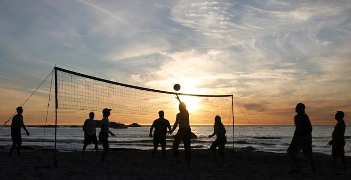
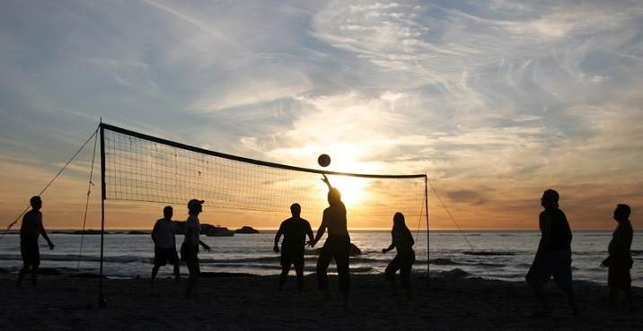

PHOTOS
Welcome to the photo gallery of Panacalan Island Sandbar, where each image tells a story of this stunning destination’s beauty and charm. Here, you’ll get a glimpse of the island’s turquoise waters, golden sunsets, and lively gatherings that bring visitors together. Whether you’re planning a quiet escape or an adventurous day with friends, these photos showcase the variety of experiences awaiting you. From relaxing on the sand to playing beach games or watching the sunset by a bonfire, let these snapshots inspire your own island getaway.


 


The photos on this page highlight the unique charm and variety of experiences at Panacalan Island Sandbar. The first image reveals the sandbar's crystal-clear waters and gentle waves, a perfect spot for swimming or simply admiring the vast ocean views. The second photo showcases the iconic stretch of white sand surrounded by endless blue skies, inviting visitors to stroll and enjoy the pristine shoreline. In the third picture, a breathtaking sunset paints the sky in warm orange hues, creating a magical setting for evening relaxation. The fourth image captures a cozy nighttime gathering around a bonfire, where friends can unwind, share stories, and enjoy the sound of the waves under a starlit sky. Moving on, the fifth photo shows a lively beach volleyball game, embodying the fun and social atmosphere that many enjoy at Panacalan Island Sandbar. Lastly, the sixth picture captures pure relaxation, with a visitor lounging in a beach chair, facing the turquoise waters and basking in the tranquility of the surroundings. Each photo represents a different way to experience the sandbar, from adventure and social moments to peaceful solitude.